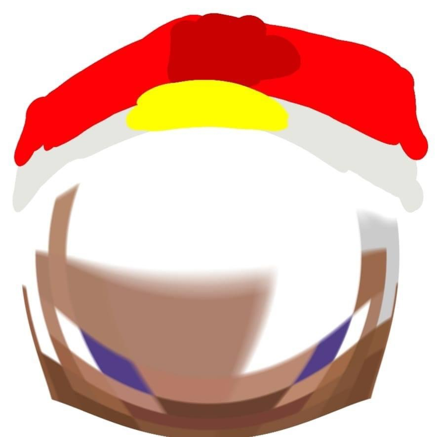

จัดทำโดย ฟรุ๊ตตี้
เว็บไซต์นี้จัดทำขึ้นเพื่อแสดงโครงงาน STEM ของโรงเรียน ซึ่งประกอบไปด้วยการศึกษา การวางแผน และการลงมือปฏิบัติจริง
โครงงานนี้เป็นส่วนหนึ่งของหลักสูตร STEM ที่มีวัตถุประสงค์เพื่อพัฒนาทักษะด้านวิทยาศาสตร์ เทคโนโลยี วิศวกรรม และคณิตศาสตร์
เราได้ศึกษาแนวคิดและออกแบบโครงงานให้สอดคล้องกับหลักการ STEM
จากการดำเนินงานโครงงาน STEM นี้ เราได้ได้รับประสบการณ์ที่มีค่า และสามารถสร้างสิ่งที่มีประโยชน์
ผลลัพธ์ของโครงงานได้รับการตรวจสอบและยืนยันโดยครูที่ปรึกษา
ชื่อ: ฟรุ๊ตตี้
โรงเรียน: __________
